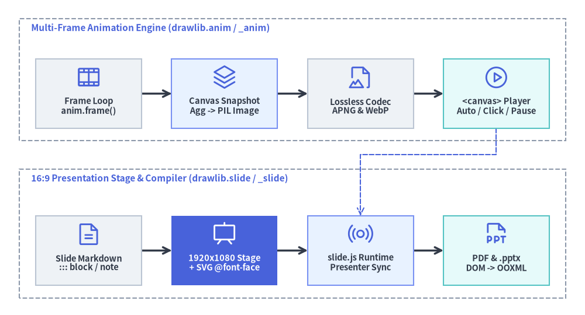
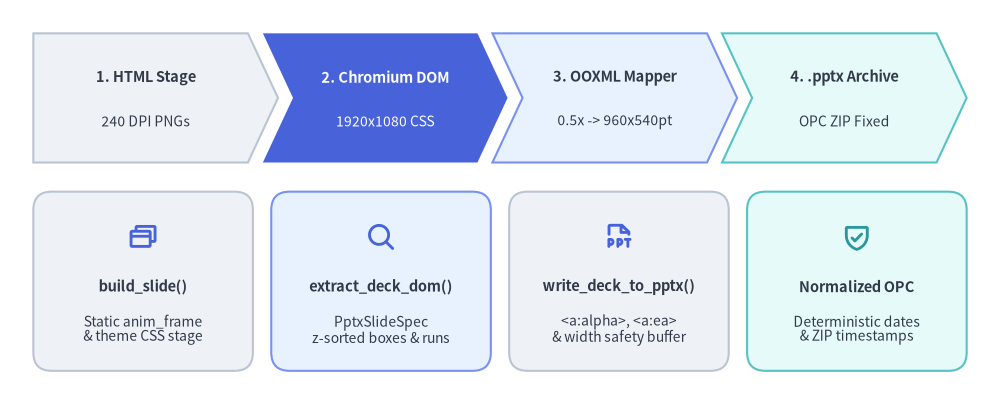

Animation & Slide Presentation Engines (drawlib.anim & drawlib.slide)
Technical architecture communication rarely stops at static prose diagrams: engineers also need step-by-step animated state transitions and 16:9 presentation decks that export cleanly to interactive HTML, vector PDF, and editable PowerPoint (.pptx). Rather than bolting on external video encoders or forcing manual PowerPoint slide redrawing, Drawlib unifies multi-frame animation (drawlib.anim) and presentation compilation (drawlib.slide) directly over the core Canvas and Markdown pipeline.
This chapter details the in-memory frame synthesis engine (_anim/), the dual-coordinate 16:9 HTML/SVG presentation stage and automatic @font-face bundler (_slide/), and the headless Chromium live-DOM to OOXML .pptx compiler.

Source Code
from drawlib.canvas import save, setup
from drawlib.diagrams.architecture import (
ArchitectureDiagram,
Node,
NodeGroup,
PhosphorIcon,
)
from drawlib.styles import Styles
setup(width=122, height=66)
d = ArchitectureDiagram(
node_style=Styles.Primary,
node_text_style=Styles.DarkBold.patch(text_size=10.5),
edge_style=Styles.DarkBold,
edge_text_style=Styles.Dark.patch(text_size=10.0),
node_card_style=Styles.Neutral,
)
# Top pipeline: Declarative Multi-Frame Animation Engine (_anim)
anim_grp = d.add(
NodeGroup(
title="Multi-Frame Animation Engine (drawlib.anim / _anim)",
width=114.0,
height=25.5,
style=Styles.MutedDashed,
text_style=Styles.PrimaryBold.patch(text_size=11.0, halign="left"),
),
xy=(4.0, 36.5),
)
f_loop = anim_grp.add(
Node("Frame Loop\nanim.frame()", width=22.0, height=14.5, icon=PhosphorIcon.FILM_STRIP, icon_size=5.4),
xy=(14.5, 9.8),
)
c_buf = anim_grp.add(
Node(
"Canvas Snapshot\nAgg -> PIL Image",
width=22.0,
height=14.5,
icon=PhosphorIcon.STACK,
icon_size=5.4,
card_style=Styles.PrimaryNeutral,
),
xy=(42.8, 9.8),
)
encoder = anim_grp.add(
Node("Lossless Codec\nAPNG & WebP", width=22.0, height=14.5, icon=PhosphorIcon.FILE_IMAGE, icon_size=5.4),
xy=(71.2, 9.8),
)
player = anim_grp.add(
Node(
"<canvas> Player\nAuto / Click / Pause",
width=22.0,
height=14.5,
icon=PhosphorIcon.PLAY_CIRCLE,
icon_size=5.4,
card_style=Styles.SecondaryNeutral,
),
xy=(99.5, 9.8),
)
# Bottom pipeline: 16:9 Slide Stage & Multi-Format Compiler (_slide)
slide_grp = d.add(
NodeGroup(
title="16:9 Presentation Stage & Compiler (drawlib.slide / _slide)",
width=114.0,
height=27.0,
style=Styles.MutedDashed,
text_style=Styles.PrimaryBold.patch(text_size=11.0, halign="left"),
),
xy=(4.0, 3.5),
)
md_src = slide_grp.add(
Node("Slide Markdown\n::: block / note", width=22.0, height=14.5, icon=PhosphorIcon.FILE_TEXT, icon_size=5.4),
xy=(14.5, 10.0),
)
stage = slide_grp.add(
Node(
"1920x1080 Stage\n+ SVG @font-face",
width=22.0,
height=14.5,
icon=PhosphorIcon.PRESENTATION,
icon_size=5.4,
style=Styles.White,
card_style=Styles.PrimaryFlat,
text_style=Styles.WhiteBold.patch(text_size=10.5),
),
xy=(42.8, 10.0),
)
runtime = slide_grp.add(
Node(
"slide.js Runtime\nPresenter Sync",
width=22.0,
height=14.5,
icon=PhosphorIcon.BROADCAST,
icon_size=5.4,
card_style=Styles.PrimaryNeutral,
),
xy=(71.2, 10.0),
)
pptx_out = slide_grp.add(
Node(
"PDF & .pptx\nDOM -> OOXML",
width=22.0,
height=14.5,
icon=PhosphorIcon.FILE_PPT,
icon_size=5.4,
card_style=Styles.SecondaryNeutral,
),
xy=(99.5, 10.0),
)
d.connect(f_loop, c_buf)
d.connect(c_buf, encoder)
d.connect(encoder, player)
d.connect(md_src, stage)
d.connect(stage, runtime)
d.connect(runtime, pptx_out)
# Cross-subsystem integration: animated assets & <canvas> state machine in Slide runtime
d.connect(player, runtime, style=Styles.PrimaryDashed).via((103.5, 33.5), (75.2, 33.5))
d.draw()
save()
1. Declarative Multi-Frame Animation Engine (drawlib.anim / _anim/)
Instead of introducing a separate scene-graph API for motion graphics, Animation (_anim/_animation.py) wraps Drawlib's standard stateless drawing lifecycle in a frame-capture loop. Every primitive, icon, chart, diagram, and SmartArt component works identically inside animated frames.
1.1. Canvas Registration & Frame Buffer Lifecycle
- Active Canvas Binding: Calling
anim = Animation(fps=10.0, loop=0)aftersetup(width=..., height=...)validates frame timing (fpsorframe_ratein seconds per frame;loop=0for infinite looping or1..Nfor bounded repeats) and registerscanvas._active_animation = selfas a singleton guard on the activeCanvas. - Context-Managed Frame Capture (
anim.frame&anim.add_frame):- Inside
with anim.frame(duration=..., clear=True):, standard Drawlib calls populate Matplotlib artists on the offscreenFigureCanvasAggsurface. - Exiting the
withblock invokesanim.add_frame(duration=duration, clear=clear), which snapshots an RGBAPIL.Image.Imageviacanvas.get_dimage().get_pil_image(), converts per-frame timing into integer milliseconds (round(sec * 1000)), and callscanvas._clear_artists()whenclear=True—wiping frame artists while preserving canvas dimensions, coordinate bounds, and background styling for the next frame. - High-level components also expose
.show: booltoggles on nodes, edges, series, and SmartArt items so progressive build-ups keep identical coordinates across frames without layout jitter.
- Inside
- Lossless Multi-Frame Encoding & Static Fallbacks:
- When
save()executes on a canvas with an activeAnimation,Canvas.save()delegates toanim._save(file_path, format=format):- Lossless APNG (
.png/.apng): Encoded via Pillow (save_all=True,append_images=frames[1:],compress_level=9,optimize=True). - Lossless Animated WebP (
.webp): Encoded withlossless=True,quality=100,method=4, andminimize_size=True(.svgis rejected withValueErrorbecause SVG does not host raster frame streams).
- Lossless APNG (
- For static print targets (
.pdf,.docx,.pptx), the compiler supports deterministic single-frame extraction (static_anim_frame="last"or"first"or explicit frame index, plusensure_static_office_image()) so multi-frame blocks degrade gracefully into sharp static illustrations.
- When
1.2. Interactive <canvas> Playback & Offline APNG Parser
When a Markdown or Slide drawlib fence configures interactive playback options (anim_trigger="auto"|"click", anim_loop="once"|"infinite", or anim_pause=[2, 5]), _slide/_assets.py (format_asset_markup) replaces static <img> markup with an interactive <div class="drawlib-anim-wrapper"> hosting a <canvas class="drawlib-anim-canvas">:
- Zero-Server
file://Base64 Hydration: To avoid browserfetch()CORS restrictions when opening localindex.htmldecks directly from disk (file://), the compiler embeds the encoded APNG/WebP payload insidedata-base64="..."alongsidedata-trigger,data-loop, anddata-pauseattributes (anim_loopautomatically defaults to"once"wheneveranim_pausecheckpoints are specified). - Dual-Path Frame Decoder (
slide.js:createAnimPlayer): At runtime, the browser player decodes frames via the hardware-accelerated WebCodecsImageDecoderAPI (image/apngorimage/webp), falling back automatically to an embedded pure-JavaScript APNG binary chunk parser (parseApngBuffer) that reconstructs standalone PNG frames (IHDR+fcTL+IDAT/fdATwith recomputed IEEE 802.3 CRC32 checksums). - 4-State Playback Machine: Each player transitions deterministically across
READY -> PLAYING -> PAUSED -> ENDED, pausing automatically at frame indices listed inanim_pauseand advancing on click or keyboard trigger (A).
2. 16:9 Presentation Stage & SVG Font Auto-Bundler (drawlib.slide / _slide/)
drawlib.slide compiles multi-locale Markdown slide decks (slide_src/<lang>/*.md, split horizontally on --- dividers or organized as one file per slide) into self-contained 1920×1080 widescreen HTML presentations (compiler.py).
2.1. Dual Coordinate Geometry (1920×1080 Stage + Vector Canvas)
Slide authoring combines two complementary coordinate spaces:
| Layer | Coordinate System & Origin | Primary Constructs & Modules | Responsibility |
|---|---|---|---|
| Macro HTML Stage | 1920 × 1080 CSS pixels, Top-Left (0, 0) (+x right, +y down) |
::: block xy=(x, y) width=W height=H ..., ::: note (_slide/_blocks.py), BoundingBox (_slide/base.py) |
Crisp DOM typography, multi-column text boxes, tables, code blocks, and hidden speaker notes |
| Micro Vector Canvas | Cartesian units (e.g., 192 × 108 for full-bleed 16:9), Bottom-Left (0, 0) (+x right, +y up) |
drawlib blocks, SlideContext / current_slide, draw_section_header(), draw_page_number() (_slide/helpers.py) |
Precision diagrams, charts, SmartArts, and section divider graphics rendered as inline <svg> |
- Container Block & Speaker Note Preprocessor (
_slide/_blocks.py):extract_slide_notes()strips::: note ... :::blocks prior to Markdown rendering and emits<aside class="slide-notes" hidden>inside each<section class="slide">.process_container_blocks()andparse_box_options()parse::: blockattributes (xy=(x, y),width,height,font_size,align,z_index,compact,class,style) intoposition: absolute<div class="slide-block slide-text-box">containers (defaulting body content toBoundingBox(80, 140, 1760, 840)beneath the slide header).
- Thread-Safe Slide Pagination Context (
_slide/base.py):- Before executing a slide's
drawlibblocks,compiler.pybindsSlideContext(index=i, total=N)inside acontextvars.ContextVaraccessed via thecurrent_slideproxy (from drawlib.slide import current_slide). Built-in helpers likedraw_page_number()anddraw_section_header(variant="split"|"centered"|"banner"|"minimal")readcurrent_slide.indexandcurrent_slide.totalautomatically.
- Before executing a slide's
2.2. Self-Contained SVG @font-face Bundler (bundle_svg_fonts)
Standard Matplotlib SVG exports emit font-family names without embedding glyph outlines (svg.fonttype = "none"), which keeps text selectable and crisp but breaks typography—especially Phosphor icon ligatures and CJK fonts—on viewer machines lacking those local fonts. Drawlib solves this end-to-end across l4_canvas and _slide/_assets.py:
- Canvas SVG Font Manifest Injection (
l4_canvas/_canvas.py): DuringCanvas.save()for.svgoutputs,_collect_svg_font_metadata()inspects every MatplotlibTextartist on the figure, maps resolved font paths back tobuiltin:fonts/<rel>orbuiltin:fonticons/<rel>(or local custom font paths), and_inject_svg_font_metadata()writes a<!-- drawlib-svg-fonts: [...] -->JSON comment immediately before</svg>. - Font Asset Extraction &
@font-faceSynthesis (_slide/_assets.py:bundle_svg_fonts):- When
build_slide()inlines vector diagrams (<div class="slide-svg-wrapper">),bundle_svg_fonts()extracts the metadata comment, strips it from the emitted HTML, resolves cached font files (auto-downloading missing asset archives viadownload_if_not_exist), and copies referenced.ttf/.otfbinaries into<output>/_assets/fonts/. - It then synthesizes deduplicated
@font-facerules (url("../_assets/fonts/...")) under/* Auto-bundled Drawlib SVG Fonts */at the bottom of each locale's<output>/<lang>/style.css, guaranteeing pixel-identical offline rendering across HTML and Chromium PDF builds.
- When
2.3. Interactive slide.js Runtime & Dual-Window Presenter Console
Each compiled deck bundles a dependency-free browser runtime (slide.js) providing:
- Responsive Stage Scaling & Navigation: Dynamically scales the
1920×1080stage to fit any viewport while supporting keyboard arrows/Space/PageDown, touch swipe gestures, Fullscreen (F), Language switching (L, preserving the active#Nslide hash across locales), and interactive Overview Grid (O/Escape, cloning slide nodes and copying live<canvas>frame bitmaps into clickable thumbnails). - Synchronized Presenter Console (
P/S->?presenter=1): Opens a secondary presenter window displaying the current slide, a next-slide preview pane, scrollable::: notespeaker notes withA-/A+font-size controls, and a pausable/resettable elapsed timer. Bidirectional state synchronization (slide_change,anim_trigger,presenter_ready) runs overBroadcastChannel('drawlib_slide_sync')with automaticwindow.opener.postMessage/presenterWindow.postMessagefallback forfile://origins.
3. Live-DOM to Native PowerPoint .pptx Compiler (_slide/compiler_pptx.py)
Converting rich CSS/HTML/SVG slides into native editable PowerPoint .pptx files traditionally suffers from brittle Markdown-to-PPTX heuristics that lose CSS grid/card layouts, borders, colors, and CJK line metrics. Drawlib solves this via a 4-stage Live-DOM to OOXML compilation pipeline (compiler_pptx.py, _pptx_dom.py, _pptx_writer.py):

Source Code
from drawlib.canvas import save, setup
from drawlib.icons import phosphor
from drawlib.smartarts import CardList, ChevronProcess
from drawlib.styles import Styles
setup(width=120, height=48)
# Top row: 4-stage sequential pipeline (ChevronProcess)
pipeline = ChevronProcess(
style=Styles.Neutral,
text_style=Styles.DarkBold.patch(text_size=10.5),
description_style=Styles.Dark.patch(text_size=10.0),
corner_angle=65.0,
spacing=1.8,
flat_left_end=True,
)
pipeline.add("1. HTML Stage", description="240 DPI PNGs")
pipeline.add(
"2. Chromium DOM",
description="1920x1080 CSS",
style=Styles.PrimaryFlat,
text_style=Styles.WhiteBold.patch(text_size=10.5),
description_style=Styles.White.patch(text_size=10.0),
)
pipeline.add("3. OOXML Mapper", description="0.5x -> 960x540pt", style=Styles.PrimaryNeutral)
pipeline.add("4. .pptx Archive", description="OPC ZIP Fixed", style=Styles.SecondaryNeutral)
pipeline.draw(xy=(4.0, 28.5), width=112.0, height=15.5)
# Bottom row: Concrete module responsibilities & artifacts (CardList)
details = CardList(
style=Styles.Neutral,
text_style=Styles.DarkBold.patch(text_size=10.5),
description_style=Styles.Dark.patch(text_size=10.0),
badge_shape="none",
icon_style=Styles.PrimaryBold,
direction="horizontal",
spacing=2.2,
)
details.add(
"build_slide()",
"Static anim_frame\n& theme CSS stage",
icon=phosphor.browsers,
)
details.add(
"extract_deck_dom()",
"PptxSlideSpec\nz-sorted boxes & runs",
icon=phosphor.magnifying_glass,
style=Styles.PrimaryNeutral,
)
details.add(
"write_deck_to_pptx()",
"<a:alpha>, <a:ea>\n& width safety buffer",
icon=phosphor.file_ppt,
)
details.add(
"Normalized OPC",
"Deterministic dates\n& ZIP timestamps",
icon=phosphor.shield_check,
style=Styles.SecondaryNeutral,
icon_style=Styles.SecondaryBold,
)
details.draw(xy=(4.0, 3.5), width=112.0, height=21.5)
save()
Stage-by-Stage .pptx Compilation Mechanics
- High-DPI Raster Staging (
build_pptx->build_slide):build_pptx()first compiles the slide project into a temporary stage withimage_format="png",dpi=240,force_image_format=True, andstatic_anim_frame=anim_frame("last"by default). Pre-rasterizing diagrams at240 DPI(ensure_static_office_image) ensures PowerPoint displays crisp Retina-grade illustrations on Windows, macOS, and web viewers without SVG font mismatches.
- Headless Chromium Computed DOM Extraction (
_pptx_dom.py:extract_deck_dom):- Launches headless Playwright Chromium at an exact
1920×1080viewport (device_scale_factor=2), injects_STAGE_OVERRIDE_CSSto lock stage scaling at1:1, and awaitsdocument.fonts.readyplus full image decoding. - Executes
_JS_EXTRACT_SLIDEinside each<section.slide>to measure livegetBoundingClientRect()geometry, computed CSS backgrounds/borders/radii,<table>cell grids, inline code pills, list markers, and fine-grained DOMRangetext runs—returning z-layer-sorted dataclasses (PptxDeckSpec,PptxSlideSpec,PptxCard,PptxRule,PptxImage,PptxTable,PptxTextBox,PptxParagraph,PptxRun,PptxColor).
- Launches headless Playwright Chromium at an exact
- OOXML Coordinate Scaling, Alpha & CJK Typography (
_pptx_writer.py:write_deck_to_pptx):- Scales
1920×1080CSS pixels by_PX_TO_PT = 0.5onto a widescreen 16:9python-pptxpresentation (960 × 540 pt, or12,192,000 × 6,858,000 EMU). - Emits native editable shapes with DrawingML
<a:alpha>fill/stroke opacity, applies horizontal text-box width safety buffers (_compute_buffered_box_x_w) so minor Chromium-vs-PowerPoint glyph width differences never cause unintended line wraps, attaches<a:ea typeface="...">XML elements (default_ea_font) so Japanese/Chinese/Korean runs render in their proper CJK font, and populates PowerPoint speaker notes fromnotes_text.
- Scales
- Deterministic OPC Archive Normalization:
- Normalizes
core_propertiestimestamps (resolve_office_datetime(timestamp=False)) and rewrites Open Packaging Conventions (OPC) ZIP member headers (normalize_opc_zip_timestamps()), making.pptxbuilds byte-reproducible across CI runs unlesstimestamp=Trueis explicitly requested.
- Normalizes
Next, proceed to Chapter 4: Markdown Tokenization & Code Block Processor.